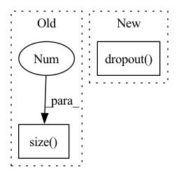

Pattern ID :41792
Before Change
batch_size = encoder_out.size(0)
encoder_dim = encoder_out.size(-1)
vocab_size = self.vocab_size
num_pixels = encoder_out.size(1 )
// Sort input data by decreasing lengths; why? For each of data in the batch, when len(prediction) = len(caption_lengths), Stop.
caption_lengths, sort_ind = caption_lengths.squeeze(1).sort(dim=0, descending=True)
After Change
// 0 0 0 0 1 2
// 0 0 0 0 1 1
dec_outputs = self.tgt_emb(encoded_captions) + self.pos_emb(torch.LongTensor([list(range(52))]*batch_size).to(device))
dec_outputs = self.dropout( dec_outputs)
dec_self_attn_pad_mask = self.get_attn_pad_mask(encoded_captions, encoded_captions)
dec_self_attn_subsequent_mask = self.get_attn_subsequent_mask(encoded_captions)
dec_self_attn_mask = torch.gt((dec_self_attn_pad_mask + dec_self_attn_subsequent_mask), 0)
In pattern: SUPERPATTERN
Frequency: 3
Non-data size: 2
Instances Fragment ID: 117197404
Project Name: royalskye/image-caption
Commit Name: 569502dd85be28a1e6a10bc8873b7cd0446556b8
Time: 2020-04-06
Author: a19970417b@qq.com
File Name: transformer.py
M Class Name: Decoder
N Class Name: Decoder
M Method Name: forward(4)
N Method Name: forward(4)
M Parent Class: nn.Module
N Parent Class: nn.Module
M File Name: transformer.py
N File Name: transformer.py
M Start Line: 150
M End Line: 189
N Start Line: 160
N End Line: 191
Before Change
Args:
input: N x T x D
length = input.size(1 )
return self.pe[:, :length]
After Change
// x is batch, channels, seq_len
x = x + self.pe[:, :, :x.size(2)]
x = self.dropout( x)
x = x.permute(0, 2, 1).contiguous()
return x Fragment ID: 117197405
Project Name: zhongyang-debug/attention-is-all-you-need-in-speech-separation
Commit Name: 361486e2e14685189e9a65a81fa779b4728c6e18
Time: 2022-08-16
Author: 68770882+Zhongyang-debug@users.noreply.github.com
File Name: model/sepformer.py
M Class Name: Positional_Encoding
N Class Name: Positional_Encoding
M Method Name: forward(2)
N Method Name: forward(2)
M Parent Class: nn.Module
N Parent Class: nn.Module
M File Name: model/sepformer.py
N File Name: model/sepformer.py
M Start Line: 133
M End Line: 135
N Start Line: 143
N End Line: 155
Before Change
def calculate_loss(self, corpus, epoch_idx=0):
input_text = corpus["target_text"][:, :-1]
target_text = corpus["target_text"][:, 1:]
batch_size = input_text.size(0 )
initial_states = torch.zeros(self.num_layers, batch_size, self.hidden_size).to(self.device)
input_embeddings = self.token_embedder(input_text)
outputs, hidden_states = self.decoder(input_embeddings=input_embeddings, hidden_states=initial_states)After Change
input_text = corpus["target_text"][:, :-1]
target_text = corpus["target_text"][:, 1:]
input_embeddings = self.dropout( self.token_embedder(input_text))
outputs, hidden_states = self.decoder(input_embeddings)
token_logits = self.vocab_linear(outputs)
token_logits = token_logits.view(-1, token_logits.size(-1)) Fragment ID: 117197402
Project Name: rucaibox/textbox
Commit Name: f4ce32eb9ada8d86654330f77116d5040863225a
Time: 2020-11-14
Author: lijunyi@ruc.edu.cn
File Name: textbox/model/LM/rnn.py
M Class Name: RNN
N Class Name: RNN
M Method Name: calculate_loss(2)
N Method Name: calculate_loss(3)
M Parent Class: UnconditionalGenerator
N Parent Class: UnconditionalGenerator
M File Name: textbox/model/LM/rnn.py
N File Name: textbox/model/LM/rnn.py
M Start Line: 68
M End Line: 74
N Start Line: 74
N End Line: 78